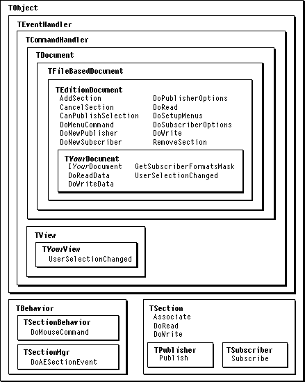

Overview
Applications use the Edition Manager to support publish and subscribe. Publish and subscribe allows users to share data between documents and applications and keep that data up to date in all locations when the original data changes.MacApp's built-in support takes care of much of the overhead required to use the Edition Manager in your application. MacApp implements numerous classes, supplies menu and alert resources, and dispatches Edition Manager Apple events to the objects that can handle them. Your application can support publish and subscribe for the data types
'PICT','TEXT', and'snd 'by overriding a relatively small number of methods, most of them in its document class.The Calc sample application demonstrates support for publishing and subscribing cell data in a spreadsheet. Figure 31-1 shows the MacApp classes and methods used to provide Edition Manager support.
Basic Edition Manager Support
If you add Edition Manager support to your application, users can specify data to publish or can subscribe to published data. To support this sharing of data, your application mustThese topics are described in greater detail beginning on the specified pages.
- add Edition Manager menu commands to the Edit menu (page 652)
- be able to designate an area in a document for publishing or subscribing (page 650)
- be able to show the required border around publishers and subscribers (page 650, 659)
- be able to handle section Apple events from the Edition Manager (page 650)
Figure 31-1 Edition Manager classes and methods

Designating an Area in a Document
To publish or subscribe to data, a user must be able to select an area of the document, usually by selecting data in a view. In most applications, selection is a standard operation, but Edition Manager support may require special handling.If your application publishes data in a format that can be represented by a line, region, or coordinate rectangle, you can use one of MacApp's designator classes,
TLinearDesignator,TRegionDesignator, orTVRectDesignator. Otherwise, you can define a designator subclass to represent your data type.Publisher and Subscriber Borders
When a user chooses the Show Borders command, the application draws the appropriate border around all visible publishers and subscribers. A publisher border is 3 pixels wide and 50 percent gray. A subscriber border is 3 pixels wide and 75 percent gray. A rectangle of 1 white pixel separates the data from the border itself. Borders are drawn outside the contents of publishers and subscribers so that data is not obscured.To draw the border for a publisher or subscriber, your application creates an object of type
TPublisherAdornerorTSubscriberAdorner. For example, when a user creates a publisher for a document, your application creates an instance ofTPublisherAdorner, initializes it with a region representing the area of the document that is published, and adds the adorner to the view that displays the publisher. The adorner draws the border for the published or subscribed-to data.Section Apple Events
The Edition Manager sends a section Apple event to tell your application when a subscriber should get a new edition or when a publisher should send a new edition. There are also section Apple events to scroll a selection and to cancel a publisher or subscriber. MacApp dispatches Edition Manager events to theDoScriptCommandmethod of your application object, which in turn calls theDoAESectionEventmethod of itsTSectionMgrbehavior object.DoAESectionEventcreates and posts a command object to handle the section event.To handle section Apple events, your application must include MacApp's Edition Manager, as described in "Recipe--Adding Publish and Subscribe Support to Your Application," beginning on page 651.